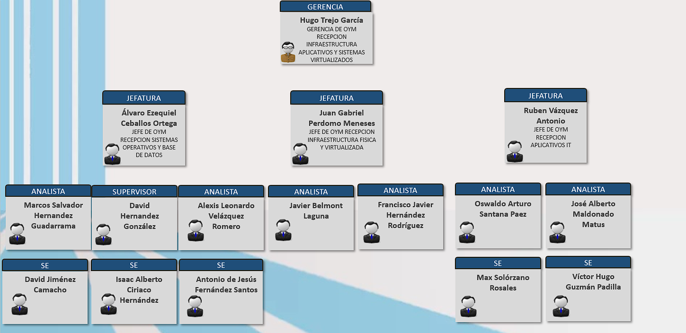

ORGANIGRAMA
El organigrama de la Gerencia de Recepción de Infraestructura, Aplicativos y Sistemas Virtualizados de Telcel muestra la estructura jerárquica y funcional del equipo encargado de gestionar la recepción y distribución de infraestructura tecnológica, aplicaciones y sistemas virtualizados dentro de la organización.